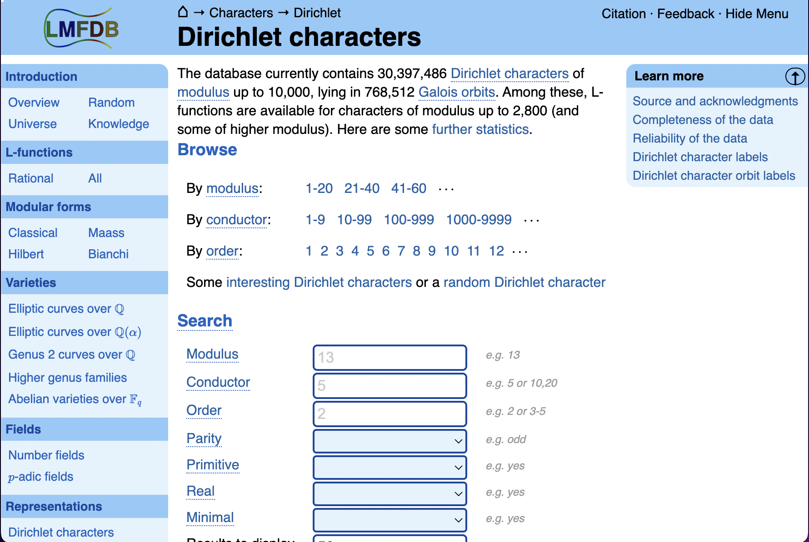
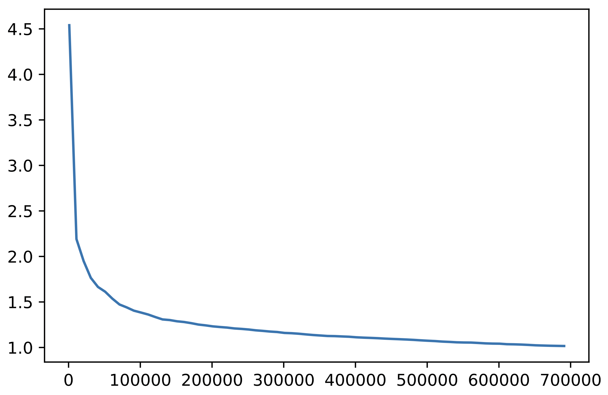
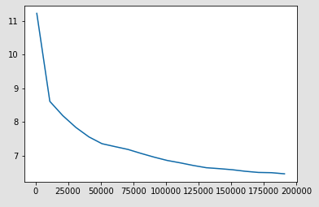

The results in this talk are joint work with Carlo Pagano, Bjorn Poonen, Michael Stoll, Nicholas Triantafillou, Bianca Viray, and Isabel Vogt.
This project started at the Park City Mathematics Institute (PCMI) 2022 program on Number Theory Informed by Computation
Given a nice variety $X$ over a number field $k$, there is no known general method to decide whether $X(k)$ is nonempty.
But don't despair! Instead, we build an obstruction set $S$ that contains $X(k)$ and is computable (we hope).
When $S = \emptyset$, this guarantees $X(k) = \emptyset$ and we say that $S$ obstructs the existence of $k$-rational points on X.
Given a place $v$ of $k$, a first obstruction set comes from the embedding $k \hookrightarrow k_v. \,$ If $X(k_v) = \emptyset\,$ then this forces $X(k) = \emptyset$.
For proper $X$, can package together all local information into a single set $X(\mathbb{A}_k) = \prod_v X(k_v).$ It is a finite computation to determine whether $X(\mathbb{A}_k) \ne \emptyset$.
A class of varieties $\mathcal{C}$ satisfies the local-to-global principle if for each $X \in \mathcal{C}$ $$\underbrace{X(\mathbb{A}_k) \ne \emptyset}_{\text{local points exist}} \implies \underbrace{X(k) \ne \emptyset}_{\text{global points do too!}}$$
While there are classes of varieties that do satisfy the local-to-global principle (e.g. quadric hypersurfaces by Hasse-Minkowski or Severi-Brauer varieites), many more do not.
So we need a refinement of our local obstructions in general, i.e., an obstruction set $S$ such that $$\huge X(k) \subset \, S \subset \, X(\mathbb{A}_k)$$
One such obstruction set is called the Brauer-Manin set $X(\mathbb{A}_k)^{\text{Br}}$ and is defined using the Brauer group of $X$.
Let's start with some examples.
$\text{Br}(\mathbb{C}) = 0 \qquad \text{Br}(\mathbb{R}) = \mathbb{Z}/2\mathbb{Z} \qquad \text{Br}(\mathbb{Q}) = \text{infinite}$
When $F$ is a field, the Brauer group $\text{Br}(F)$ gives an indication of the complexity of the Galois theory of $F$.
Alternatively, gives insight into how complicated it is to solve norm equations over $F$
$\textrm{Br}(F) = \{ Y : Y_{\overline{F}} \simeq \mathbb{P}^n_{\overline{F}} \}/\simeq_{\tiny F} \qquad $ ($F$ a field)
$\textrm{Br}\,\mathbf{k}(X) = \{ Y : Y_{\overline{\mathbf{k}(X)}} \simeq \mathbb{P}^n_{\overline{\mathbf{k}(X)}} \}/\simeq_{\tiny F} \qquad $ ($X$ smooth variety)
$\textrm{Br}(F) = \{ Y : Y_{\overline{F}} \simeq \mathbb{P}^n_{\overline{F}} \}/\simeq_{\tiny F} \qquad $ ($F$ a field)
$\textrm{Br}\,\mathbf{k}(X) = \{ Y : Y_{\overline{\mathbf{k}(X)}} \simeq \mathbb{P}^n_{\overline{\mathbf{k}(X)}} \}/\simeq_{\tiny F} \qquad $ ($X$ smooth variety)
A Dirichlet character is a function $\chi \colon \mathbb{Z} \to \mathbb{C}$ together with a positive integer $d$ called the modulus, such that for all integers $a,b$
These imply $\chi(a)$ is a root of unity if $\gcd(a,d) = 1$.
LMFDB Dirichlet characters database
The character $\chi$ with LMFDB label 65.k.8 has modulus $d = 65$.
The first few values on integers $a$ with $\gcd(a,65) = 1$ are
| \(a\) | \(-1\) | \(1\) | \(2\) | \(3\) | \(4\) | \(6\) | \(7\) | \(8\) | \(9\) | \(11\) | \(12\) | \(14\) |
| \( \chi(a) \) | \(1\) | \(1\) | \(1\) | \(i\) | \(1\) | \(i\) | \(-1\) | \(1\) | \(-1\) | \(-i\) | \(i\) | \(-1\) |
The order of $\chi$ is $4$ and we say $\chi$ is a quartic character.
Moreover, $\chi$ is primitive since there is no character of smaller modulus whose values agree with $\small \chi$ on integers coprime to $\small d$.
GOAL: Given an elliptic curve $\small E/\mathbb{Q}$ and a family of twisted $L$-functions by Dirichlet characters $\chi$, describe how likely it is that $\small L(E,1,\chi) = 0$ to gain arithmetic info about $\small E$.
The functional equation for the twisted L-function by a character $\small \chi$ is \[ \small L(E,s,\chi) = \varepsilon \, L(E,2-s,\overline{\chi}),\] where the sign $\varepsilon$ is a complex number with $\small |\varepsilon|=1$ depending $\small E$ and $\small \chi$
When $\chi$ is a quadratic character (order 2), $\chi = \overline{\chi}$ and moreover the sign $\varepsilon = \pm{1}$. In that case, $\small \varepsilon \ne 1$ forces $L(E,1,\chi) = 0$.
When $\chi$ has order $\small \ge 3$, it may be that $\chi \ne \overline{\chi}$. Now, when $\varepsilon \ne 1$ it is not enough to guarantee vanishing of $L(E,1,\chi)$.
One fruitful approach via Katz and Sarnak is to model such L-functions by a suitable classical (compact) matrix/symmetry group (unitary, orthogonal, symplectic,...)
In this context, the symmetries of the family of L-functions determine the appropriate group of matrices; the sign $\varepsilon$ of the functional equation is analogous to the determinant of the matrix
(unitary: $\small |\det| = 1$, orthogonal: $\small \det = \pm 1$, symplectic: $\small \det = 1$)
Many properties of twisted L-functions are analogous to those of characteristic polynomials $\small p_A(\lambda) = \det(A - \lambda I)$ of unitary$\small ^\ast$ matrices $\small A$.
Keating and Snaith conjectured that the distribution of the values $\small |L(E,1,\chi)|$ is related to the distribution of the values of the characteristic polynomials $\small |p_A(1)|$
Thus to obtain conjectural asymptotics for the vanishing of $\small L(E,1,\chi)$ in families, one can relate the probability distribution of $\small |p_A(1)|$ to that of the values of the twisted L-functions
$^\ast$A matrix $U$ is unitary if $U^{-1}$ is equal to the conjugate transpose of $U$.
Histogram of relative frequencies of $\footnotesize |L(E,1,\chi)|$
for primitive quartic $\footnotesize \chi$ of prime modulus $\footnotesize \le 20000$
and curve $\footnotesize E$ with label 11.a1
Histogram of relative frequencies of $\footnotesize |p_A(1)|$ for
random unitary matrices $A$ of size $\footnotesize 20 \times 20$
$\qquad$
Let $\small E/\mathbb{Q}$ be an elliptic curve.
There are infinitely many primitive Dirichlet characters $\small \chi$ of order $\small 3$ and $\small 5$ (ordered by conductor) such that $\small L(E,1,\chi) = 0$. However, for any fixed prime $\small k \ge 7$, there are only finitely many $\small \chi$ of order $k$ such that $\small L(E,1,\chi) = 0$.
There are infinitely many primitive Dirichlet characters $\chi$ of order $\small 4$ and $\small 6$ such that $\small L(E,1,\chi) = 0$.
There are only finitely many primitive Dirichlet characters $\small \chi$ with $\small \varphi(\text{ord}(\chi))>4$ such that $\small L(E,1,\chi) = 0$.
To provide numerical evidence for the conjecture, we ran a combination of Sage and PARI/GP code on the Open Science Grid.
The combined wall time of all computations was more than 70 years.

Ratio of predicted vanishings to emperical vanishings of $\small |L(E,1,\chi)|$ by primitive quartic characters $\small \chi$ of modulus $\small \le 700000$ for the curve $\small E$ with label 11.a1

Ratio of predicted vanishings to emperical vanishings of $\small |L(E,1,\chi)|$ by primitive sextic characters $\small \chi$ of modulus $\small \le 200000$ for the curve $\small E$ with label 11.a1
To apply the random matrix theory model to our family of twisted L-functions, we need to know
To confirm a family of twisted L-functions has unitary symmetry, we must study the equidistribution properties of the normalized Gauss sums $\small \frac{\tau(\chi)^2}{\text{cond}(\chi)}$ on the unit circle.
From left to right: Histograms of the argument (angle) of $\footnotesize \tau(\chi)^2/\text{cond}(\chi)$ of cubic, quartic, and quintic characters of modulus $\footnotesize \le 200000$
Quartic characters differ from those of prime order since they may decompose into a product of characters of strictly smaller order.
We say that $\small \chi$ is a totally quartic character if it decomposes into a product of characters of exact order 4.
Non-example: The primitive quartic character with label 65.h.12 decomposes as the product of a quartic character 65.i.27 and a quadratic character 65.c.51.
PROPOSITION (BERG, RYAN, YOUNG) The normalized Gauss sums of the family of totally quartic and of all quartic Dirichlet characters $\small \chi$ equidistribute on the unit circle. The latter does so slowly; for such characters $\footnotesize \chi$ of modulus $\footnotesize \le X$ the rate of equidistribution is $\footnotesize O(\log(X)^{-1})$.
Histogram of the argument (angle) of $\footnotesize \tau(\chi)^2/\text{cond}(\chi)$
of totally quartic characters of modulus $\footnotesize \le 200000$
Histogram of the argument (angle) of $\footnotesize \tau(\chi)^2/\text{cond}(\chi)$
of primitive quartic characters of modulus $\footnotesize \le 200000$
The family of totally quartic characters has unitary symmetry. Applying the random matrix model, we also conjecture that there are infinitely many totally quartic characters with $\footnotesize |L(E,1,\chi)| = 0$
Ratio of predicted vanishings to emperical vanishings of $\small L(E,1,\chi)$ by
totally quartic characters $\small \chi$ of modulus $\small \le 700000$ for the curve $\small E$ with label 11.a1